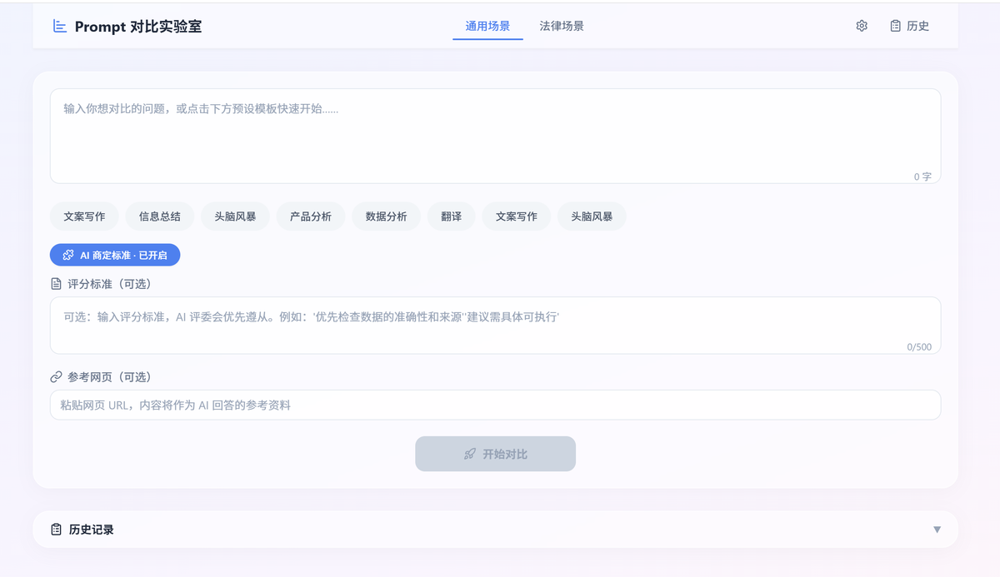
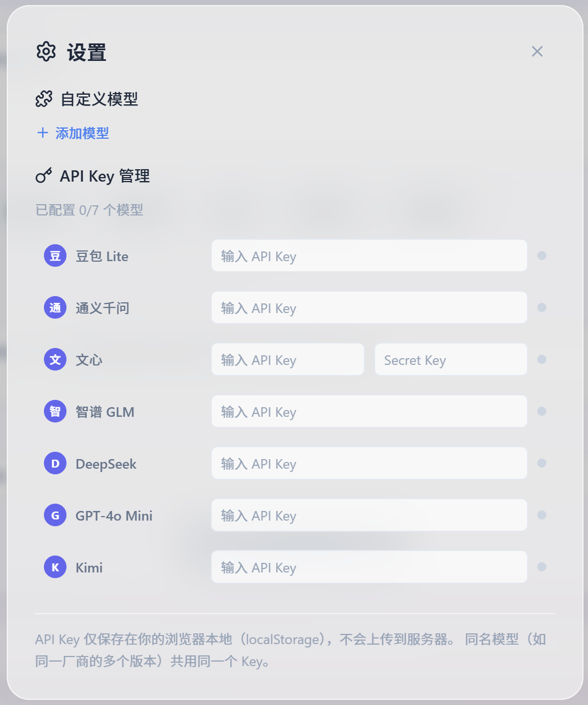

前端使用 React + TypeScript 构建，提供直观的对比界面与评分可视化
后端使用 FastAPI，负责调度多模型 API 调用与评分计算
✅ 双向回避：评委不得评自己所属模型，避免利益偏倚
✅ 标准差检测：用统计学方法检测评委间的评分分歧
✅ AI 商定标准：支持 AI 自动生成评分标准，也支持人类自定义
同一 Prompt 同时调用多个大模型，结果并排展示，一目了然
多评委交叉评分，评委与被测 AI 双向回避，保证评分公平性
用统计学标准差检测评委间的评分分歧，标记有争议的回答
支持 AI 商定评分标准和人类自定义评分标准双模式
支持输入参考网页 URL，AI 结合网页内容回答，增强对比深度
评分结果通过 Recharts 图表直观展示，支持水平/垂直布局
Prompt对比实验室是 前后端分离架构，需要后端 API 服务运行，无法提供在线演示。
但您可以从截图和架构介绍中了解项目的完整设计与技术细节。
源码和详细文档可在 GitHub 仓库查看。